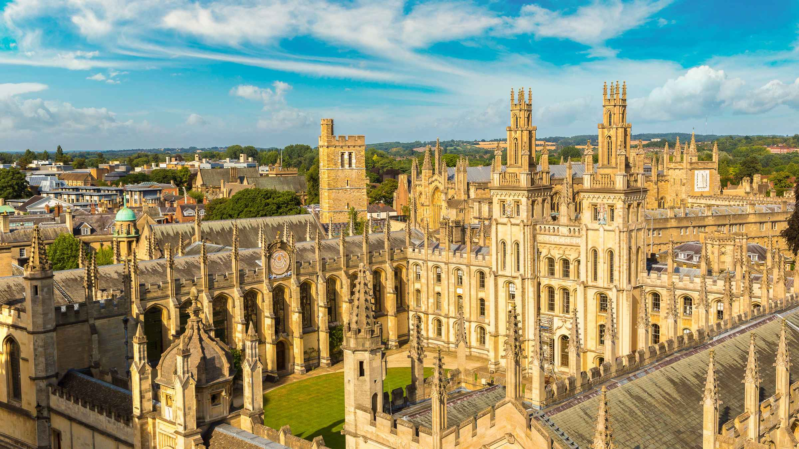

ДВФУ
Национальный автономный университет Мексики
Государственное учебное заведение, расположенное, большей частью, в
Мехико, считающийся
крупнейшим по числу студентов
университет в Северной и Южной Америке.
Основан 22 сентября 1910 года как либеральная альтернатива римско-католическому
Королевскому и Папскому университету
Мексики (основан 21 сентября 1551 года королевским указом Карла I Испанского и закрыт
либералами в 1867 году). Это
единственный университет в Мексике, имеющий среди своих выпускников лауреатов
Нобелевской премии: Альфонсо Гарсия Роблес
(премия мира), Октавио Пас (литература), и Марио Молина (химия).
MIT
Частный исследовательский университет в Кембридже, США. Основан в 1861 году.
Известен инженерными, физическими и
IT-направлениями, а также множеством научных открытий и стартапов.